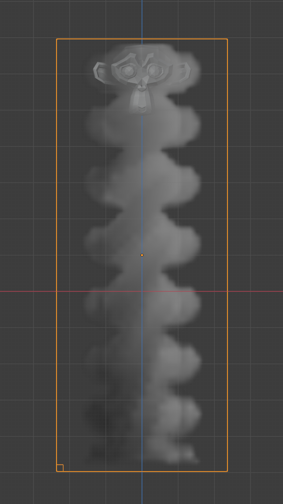
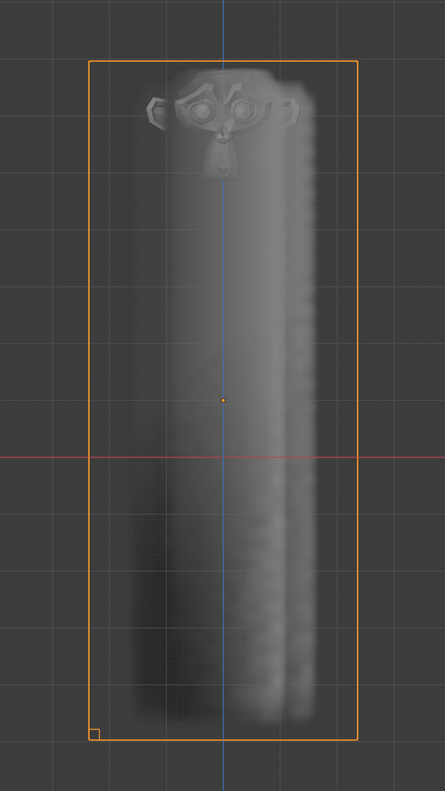

流
流体 流量 类型是用来添加或移除流体到域对象。流体对象应该包含在域的 边界框 内，以便工作。
要将任何网格对象定义为 流动 对象，请在 中点击 流体 来添加流体物理。然后选择 流动 作为流体的 类型。现在你应该有一个默认的流体流动源对象。
设置
参考
- 面板:
- 类型:
流
- 流体类型
- 烟雾
只冒烟。
- 火焰 + 烟雾
同时散发火和烟雾。
- 火焰
只发射火。请注意，该领域将自动产生一些烟雾，以模拟燃料燃烧后留下的烟雾。
- 液体
释放液体。
- 流动行为
控制流动对象是否增加（Inflow）、移除（Outflow），或将网格本身变成流体（Geometry）。
- 流入
这个物体会向模拟中排放流体，就像水龙头或火的底部。
- 流出
任何进入这个对象的 边界框 的流体都将被从域中移除（想想看，一个排水口或一个黑洞）。这在与流入物结合时很有用，可以防止整个领域被填满。流出的对象可以是动画的，流体消失的区域会随着对象的移动而移动。
- 几何数据
这个对象在域的边界框内的所有区域都将被用作模拟中的实际流体。你可以在域内放置一个以上的流体对象。同时要确保表面法线是向外的，否则将无法正常模拟。与域对象相反，流体对象使用的是实际的网格几何形状。
- 使用流
启用或禁用流体的流动，这个属性对于动画来说非常有用，可以在流体被添加到域中或从域中移除时选择性地启用和禁用。
- 采样子步长
用于减少快速移动源的流体排放的间隙的子步骤的数量。
烟雾流入量以不同的分步速率迅速向上上升的比较。  采样子步骤：0.
 采样子步骤：3.
请注意，这些排放子步骤是在每个模拟步骤中发生的，而不是每一帧。仿真步数是由自适应时间步长控制的。
- 烟雾颜色
发出的烟雾的颜色。当不同颜色的烟雾混合时，它们会融合在一起，最终沉淀为一种新的组合颜色。
- 绝对密度
如果这个复选框被启用，发射器只有在发射器区域有空间的情况下才会产生更多的烟雾或火焰。否则，烟雾或火焰将一直产生，并且加起来。
- 初始温度
排放的烟雾的温度与域的环境温度之间的差异。这个设置对烟雾的影响取决于域的 Heat Buoyancy。
- 密度
一次性排放的烟雾量。值越大，产生的密度就越大。
- 顶点组
当设置时，使用指定的 顶点组 来控制烟雾的排放位置。
流来源
初始速度
当启用时，流体将继承流源的动量。
- 源
继承速度的系数。如果数值为1，就会发出与源的速度相同的流体。
- 法向
这个选项控制沿面的速度流体的多少 Normal。请注意，初始速度将总是沿着所有面的法线应用。因此，在一个封闭的流源网格中，流体总是在一个以上的方向被释放出来。为了只沿一个方向设置初始速度，所有法线都需要指向同一个方向。这可以在使用平面作为流动对象时实现。
- 初始 X、Y、Z
世界空间中沿X、Y、Z坐标的初始速度。这可以在沿 法线 的初始速度之外使用。
纹理
参考
- 类型:
流
- 面板:
启用后，使用指定的纹理和设置来控制烟雾或火焰可以从网格的哪个位置发出。这些设置对*Outflow Flow Behavior*没有影响。
- 映射
控制是否使用 生成的UV 或手动UV映射。
- 尺寸
缩放整体纹理图像。比例是面部边界框除以比例的系数。例如，比例为15时，将在整个UV边界框上产生15次交替的效果。使用其他节点可以实现不同的效果。例如，使用数字节点。
- 偏移量
沿 Z 轴平移纹理。